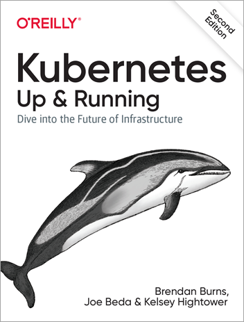

| Author | Dave Glover, Microsoft Australia |
|---|---|
| Platform | Raspberry Pi, Raspbian Buster, Kernel 4.19 |
| Date | October 2019 |
| Acknowledgments | Inspired by Alex Ellis' work with his Raspberry Pi Zero Docker Cluster |
| Skill Level | This guide assumes you have some Raspberry Pi and networking experience. |
Building a Kubernetes Intelligent Edge cluster on Raspberry Pi is a great learning experience, a stepping stone to building robust Intelligent Edge solutions, and an awesome way to impress your friends. Skills you develop on the edge can be used in the cloud with Azure Kubernetes Service.
You can download a free copy of the Kubernetes: Up and Running, Second Edition book.
It is an excellent introduction to Kubernetes and it will accelerate your understanding of Kubernetes.
Published: 8/22/2019
Improve the agility, reliability, and efficiency of your distributed systems by using Kubernetes. Get the practical Kubernetes deployment skills you need in this O'Reilly e-book. You will learn how to:
Learn how to use tools and APIs to automate scalable distributed systems for online services, machine learning applications, or even a cluster of Raspberry Pi computers.
Before run the demos you need to insure an instance of the corresponding demo pod is running. By default, there are zero pod instances active when the cluster is set up. The easiest way to start a pod is from the Kubernetes Dashboard Deployments and Replica Set tabs
You need the application service address and port. Again. most easily obtained from the
kubectl get services
NAME TYPE CLUSTER-IP EXTERNAL-IP PORT(S) AGE image-classifier LoadBalancer 10.96.136.29 192.168.100.200 80:32519/TCP 4h25m jupyter LoadBalancer 10.96.224.173 192.168.100.203 8888:30471/TCP 4h25m kuard LoadBalancer 10.96.229.114 192.168.100.201 8080:32515/TCP 4h25m kubernetes ClusterIP 10.96.0.1 <none> 443/TCP 4h26m led-controller LoadBalancer 10.96.148.9 192.168.100.205 80:30752/TCP 4h25m nginx-service LoadBalancer 10.96.9.213 192.168.100.202 80:32711/TCP 4h25m openweathermap LoadBalancer 10.96.109.92 192.168.100.204 80:31732/TCP 4h25m
while : ; do curl -X POST http://{image-classifier EXTERNAL-IP}/image -H "Content-Type: application/octet-stream" --data-binary @banana.jpg done &
count=0; while : ; do count=$(($count + 1)); curl http://{led-controller EXTERNAL-IP}/api/ToggleLed?led=$(($count % 8)); done &